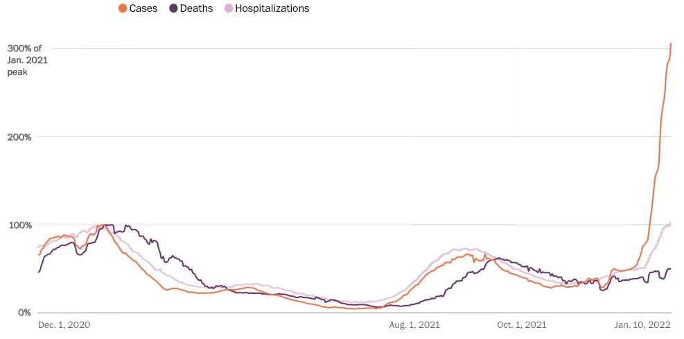
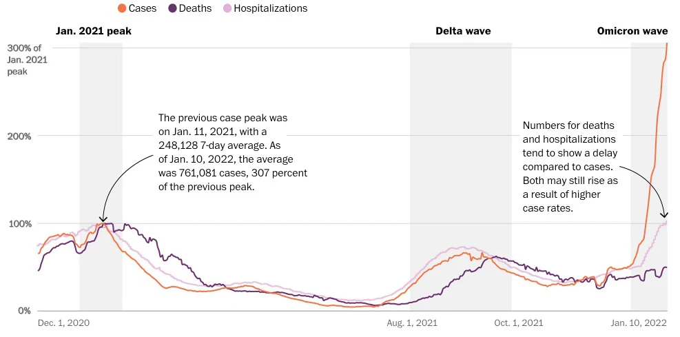

IEEE TVCGIEEE VIS 2024
A Qualitative Analysis of Common Practices in Annotations
A Taxonomy and Design Space
Annotations are how a chart points: a box around a cluster, an arrow to a note, a line at the average. To see how people annotate in practice, we coded 1,888 annotated static charts of 14 types, gathered from Google Images. Seven annotation types kept coming back. We organized them into a design space that asks three questions of every annotation: Why? the task it supports, How? the types that carry it, and What? the data it comes from.
- Annotated charts
- 1,888
- Chart types
- 14
- Annotation types
- 7
- Agreement, Cohen's κ
- 0.886
What counts as an annotation
Prior definitions differed, so the paper sets its own. It separates the chart's basic elements from what is added on top of them.
Annotations are supplementary elements, such as graphical shapes, text, or color, added to pre-existing elements of a visualization to provide additional context beyond the basic data presented and to draw attention to specific portions or elements of the data, thereby enhancing the expressiveness of the visualization.
The paper's definition, Sect. 2
- Basic elements
- What a chart needs to convey its information without outside aids: usually axes, axis labels, data points, titles, legends, and gridlines.
- Supplementary elements
- Additional text or graphics that make the chart easier to understand and more expressive. These are the annotations.


Seven types
Coding started from five types found in an earlier study of bar charts and ended with seven. Fig. 4 puts all seven on one illustrative scatterplot. Pick a type, or touch an annotation on the chart, to see it on its own.
Three questions
The design space borrows its frame from Brehmer and Munzner's task typology. Here it is applied to six charts from the corpus, as in Fig. 1.
-
Why?
The task the annotation supports for the viewer: present, identify, summarize, or compare.
-
How?
The annotation types that carry it, alone or combined in an ensemble, and how often each appears on each kind of chart.
-
What?
The data the annotation is made from: the dataset itself, a calculation on it, or a source outside it.
The design space
Fig. 5, set out so you can read across it. Start from a task, follow a type along its row, or read one kind of chart down its column.
What? Where the content comes from
Once a type is chosen, its content has to come from somewhere. The paper sorts annotations into three categories by their relation to the chart's data. A chart can have all three.
Sources by annotation type
Share of 3,610 coded annotation instances. Table 1.
1–5%5–10%10% or more
When one type is not enough
Where a single type could not carry the message, people combined several. The paper calls these ensembles. It reports patterns, not counts: the designers' intentions were not known.
The most common ensembles
-
Text adds the context; the connector shows which point it belongs to.
-
Text adds the context; the enclosure identifies the text or sets it apart.
-
Color is often paired with glyphs to identify or compare categories.
-
Enclosure and color identify a region; text presents context that helps the identification.
-
The enclosure identifies the data, text gives the details, and the connector ties the two together.
With four or more types together, annotations often encoded the same thing twice. A simpler two-type ensemble might suffice.
How the parts depend on each other
-
One-way
One annotation conveys its message without the other; the second only reinforces it. In Fig. 4, the red and green of the crosses and circles add no new information; they emphasize the glyphs.
-
Two-way
Each needs the other to convey its message. In Fig. 4, the arrow and the sentence rely on each other; without either one, the message is unclear.
An ensemble of N distinct annotations is an N-annotation ensemble: two-, three-, and four-annotation ensembles all appear. Drawings here are made for this page.
Three case studies
For each, the authors took a professionally designed chart, removed every annotation, and added them back task by task, guided by the three questions and by the article the chart ran with.
How the study worked
Sect. 4 of the paper. The charts and both coders' labels are in the supplemental materials.
Building the corpus
-
8,768
Images from Google Images, scraped with queries of the form “annotated {chart type}” across 14 common chart types.
-
1,244 duplicates removed.
-
4,847 more excluded: chart types outside the study, charts that were not clearly visible, charts without annotations, and charts that did not show real data.
-
2,677
Images coded independently by two coauthors, in several rounds with frequent meetings of all the authors. The starting themes were five types from a prior study: enclosure, connector, text, glyph, and color.
-
Agreement: average Cohen's κ of 0.886. The coders kept 1,888 and 1,844 images with a chart type in the study and an annotation not coded as “no annotation”, “undetermined”, or “other”.
-
1,888
Annotated charts analyzed, using the first coder's labels.
The corpus by chart type
From Fig. 5. The mix was not uniform, which the paper reads as a sign of how popular each chart type is.
Using the design space
A structured way to think about constructing and critiquing annotations.
-
Construct and critique
Combining common practice for data, task, and encoding, it lets an author decide in an organized way which annotations to add, and critique others' by naming the parts they used.
-
Open up the space
The range of possible annotation encodings was not obvious even to the authors at first. The design space lists the types to choose from.
-
Consider common practice
Seeing which types are frequent and infrequent on each chart type encourages thought about common strategies, and could inform tools that suggest annotations.
What this study does not show
- Nothing is known about the annotators' expertise or the tools they used.
- Without talking to the designers, their goals could only be inferred, and viewers may not read an annotation the way it was meant.
- The taxonomy and design space are qualitative; how well each annotation works was not evaluated.
- Only static charts were studied. Dynamic, interactive, and less frequent chart types may expand the design space.
Next steps the paper names: empirical tests of annotation types across chart types, annotations in interactive visualizations, the views of professionals, and whether viewers read annotations as designers intend.
Cite the paper
Md Dilshadur Rahman, Ghulam Jilani Quadri, Bhavana Doppalapudi, Danielle Albers Szafir, and Paul Rosen. A Qualitative Analysis of Common Practices in Annotations: A Taxonomy and Design Space. IEEE Transactions on Visualization and Computer Graphics, 31(1):360–370, 2025. doi:10.1109/TVCG.2024.3456359
Presented at IEEE VIS 2024. Preprint on arXiv:2306.06043. The annotated charts and coding are in the supplemental materials.
@article{rahman2025qualitative,
author = {Rahman, Md Dilshadur and
Quadri, Ghulam Jilani and
Doppalapudi, Bhavana and
Szafir, Danielle Albers and
Rosen, Paul},
title = {A Qualitative Analysis of Common
Practices in Annotations: A
Taxonomy and Design Space},
journal = {IEEE Transactions on Visualization
and Computer Graphics},
volume = {31},
number = {1},
pages = {360--370},
year = {2025},
doi = {10.1109/TVCG.2024.3456359}
}